Step-by-step multiblock assembly: Steam Turbine Hub, Gas Turbine Hub, Diesel Controller (Radiator), Coke Oven Chamber, Wood Distillation Retort, Bessemer Converter, Calutron, Atmospheric Column (Shukhov Furnace), Oil Well, Silo Outlet, Steam Excavator, Heavy Excavator, Skip Hoist Winch.
Zavod machines by era: what each one does, what drives it and how it looks. Recipes are in NEI, live readings — hover the machine with Waila.
1farm (before ~1850)
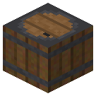
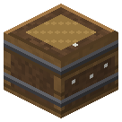
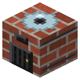
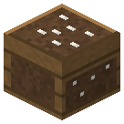
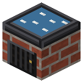
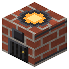
2steam and mechanics (~1850-1880)
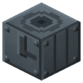

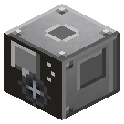
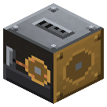
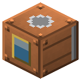


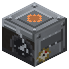
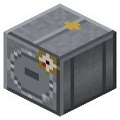
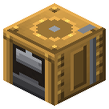
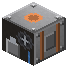
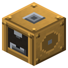

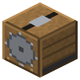
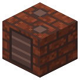
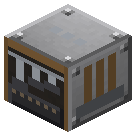
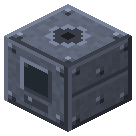
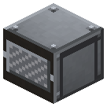
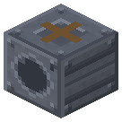
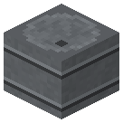
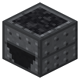
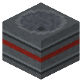
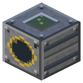

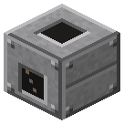

3electricity (~1880-1910)

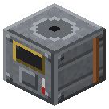
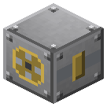
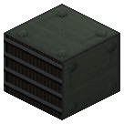
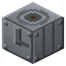
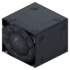
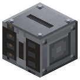
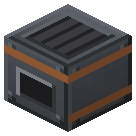

4oil and electricity at scale (~1910-1945)
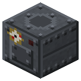
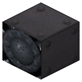
5atom and space
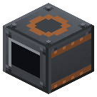
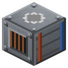
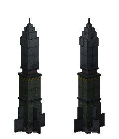
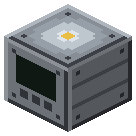